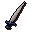

Blurite sword

| Config name | faladian_sword |
| Item id | 667 |
| Value | 200 gp |
| Weight | 4lb |
| Members | No |
| Tradeable | No |
| Stackable | No |
| Equip slot | righthand |
| Options | Wield |
| Category | weapon_slash |
| Defined in | scripts/quests/quest_squire/configs/quest_squire.obj |
| Equipment stats | Stab att 9, Slash att 14, Crush att -2, Slash def 3, Crush def 2, Strength 10 |
Blurite sword
A Faladian Knight's sword.
Quests
Referenced in scripts
scripts/quests/quest_squire/scripts/quest_squire.rs2scripts/quests/quest_squire/scripts/squire_journal.rs2